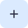

Welkom bij Neutraal KiesLab
Ontdek welke politieke partij het beste bij jouw opvattingen past. Beantwoord onze vragen en krijg een objectief advies gebaseerd op jouw antwoorden.
Neutraal & Objectief
Onze stemwijzer is volledig onafhankelijk en geeft objectief advies op basis van jouw antwoorden.

Snel & Eenvoudig
In slechts 5-10 minuten krijg je een duidelijk beeld van welke partij bij jou past.
Bewaar je Resultaten
Maak een account aan om je resultaten te bewaren en later terug te kijken.
Of maak een account aan om je resultaten te bewaren